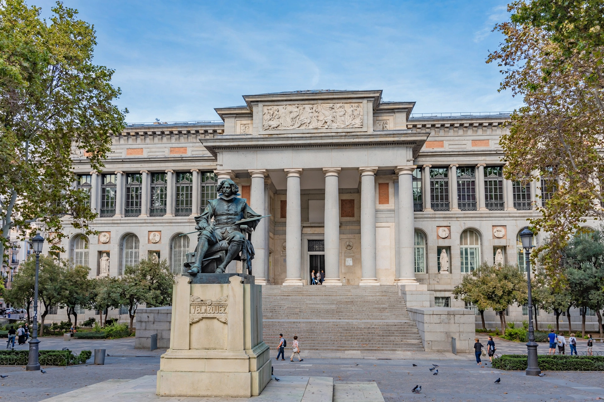

The Museo Nacional del Prado, known in Spanish as the Prado Museum, is the main Spanish national art museum, located in central Madrid. It is widely considered to house one of the world's finest collections of European art, dating from the 12th century to the early 20th century, based on the former Spanish royal collection.

| Established | 19 November 1819 |
|---|---|
| Location | Paseo del Prado, Madrid, Spain |
| Type | Art museum, historic site |
| Collection size | c. 8,200 drawings, 7,600 paintings, 4,800 prints, 1,000 sculptures |
| Director | Miguel Falomir (from 2017) |
| Architect | Juan de Villanueva |
The building that now houses the museum was designed in 1785 by architect Juan de Villanueva on the orders of Charles III, intended as a natural history cabinet. Ferdinand VII, encouraged by his wife Queen Maria Isabel de Braganza, decided to use it for a royal museum of paintings and sculptures. It opened to the public in 1819, initially with 311 paintings. The collection grew through nationalisation of church property, bequests, and acquisitions. The museum expanded notably with the annexation of the nearby Casón del Buen Retiro and, in 2007, a major extension designed by Rafael Moneo linking to the cloisters of the Jerónimos church.
Highlights include works by Diego Velázquez — notably Las Meninas (1656) — Francisco Goya, including The Third of May 1808 and the Black Paintings, El Greco, Peter Paul Rubens, Hieronymus Bosch (The Garden of Earthly Delights), Titian, Raphael, and Rogier van der Weyden (The Descent from the Cross). Italian, Flemish, Dutch, French, German and British schools are also represented.
The museum stands on the Paseo del Prado boulevard alongside the Thyssen-Bornemisza Museum and the Museo Reina Sofía, together forming Madrid's 'Golden Triangle of Art'. It was designated a Bien de Interés Cultural.